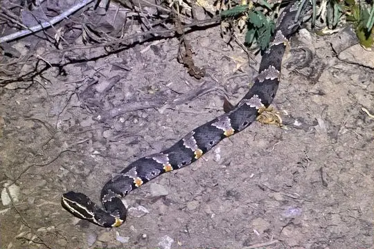

Agkistrodon
The genus Agkistrodon (family Viperidae) has 8 living species in SnakeList (all venomous), recorded in 8 countries.
- 8living species
- 8venomous
- 8countries
About the genus
A genus of the family Viperidae (vipers and pit vipers).
What the name means: Agkistrodon – from the Greek ankistron (fishhook) and odon (tooth), probably for the curved fangs.[1]
Species
Showing 8 species
 Broad-banded CopperheadAgkistrodon laticinctus
Broad-banded CopperheadAgkistrodon laticinctus CantilAgkistrodon russeolus
CantilAgkistrodon russeolus CopperheadAgkistrodon contortrix
CopperheadAgkistrodon contortrix CottonmouthAgkistrodon piscivorus
CottonmouthAgkistrodon piscivorus Florida CottonmouthAgkistrodon conanti
Florida CottonmouthAgkistrodon conanti Gloyd's MoccasinAgkistrodon howardgloydi
Gloyd's MoccasinAgkistrodon howardgloydi Mexican MoccasinAgkistrodon bilineatus
Mexican MoccasinAgkistrodon bilineatus
Taylor's CantilAgkistrodon taylori
No snakes in Agkistrodon match.
About the genus Agkistrodon
- Distribution: living species recorded in 8 countries, on one continent: North America.
- Family: Viperidae.
- Countries and territories: Belize, Costa Rica, El Salvador, Guatemala, Honduras, Mexico, Nicaragua, United States.
Compare its species
Its living species side by side. Lengths come only from SnakeList’s reviewed, sourced accounts; the others are left blank rather than guessed.
| Species | Venom | Recorded in | Adult length (reviewed accounts) |
|---|---|---|---|
| Broad-banded Copperhead Agkistrodon laticinctus | Venomous | 1 country (North America) | No reviewed account yet |
| Cantil Agkistrodon russeolus | Venomous | 3 countries (North America) | No reviewed account yet |
| Copperhead Agkistrodon contortrix | Venomous | 1 country (North America) | Usually about 60-90 cm |
| Cottonmouth Agkistrodon piscivorus | Venomous | 1 country (North America) | Usually about 60 cm-1.2 m; record about 1.9 m |
| Florida Cottonmouth Agkistrodon conanti | Venomous | 1 country (North America) | No reviewed account yet |
| Gloyd's Moccasin Agkistrodon howardgloydi | Venomous | 3 countries (North America) | No reviewed account yet |
| Mexican Moccasin Agkistrodon bilineatus | Venomous | 5 countries (North America) | No reviewed account yet |
| Taylor's Cantil Agkistrodon taylori | Venomous | 1 country (North America) | No reviewed account yet |